Nakagawashi
Nakagawashi · Fukuoka
Nakagawashi
Highlighted on the Fukuoka map.
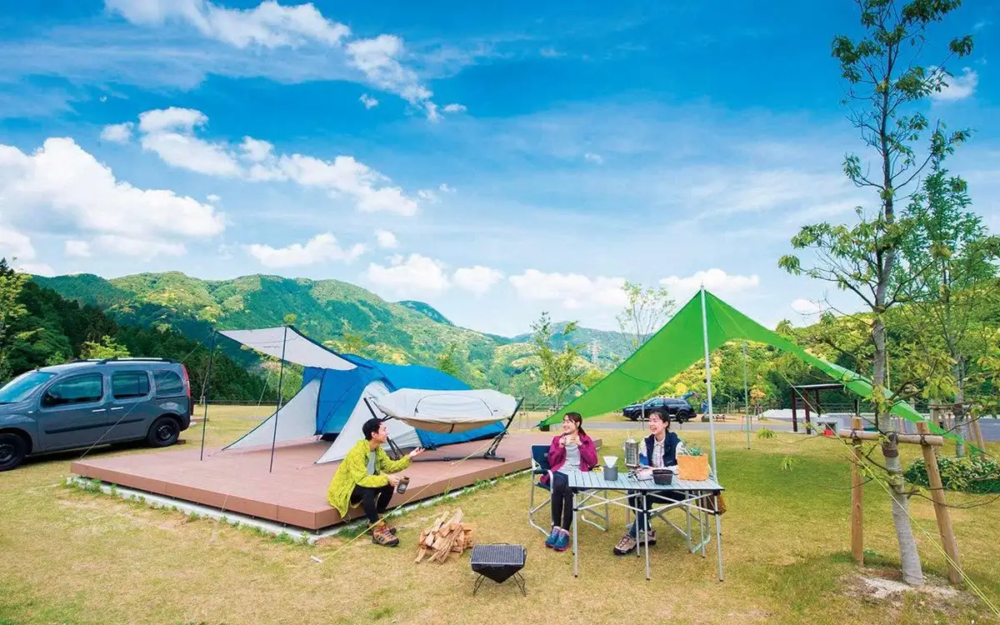
Sights
Momberu Gogayama Besukyanpu
Arahito Shrine Furin Kairo
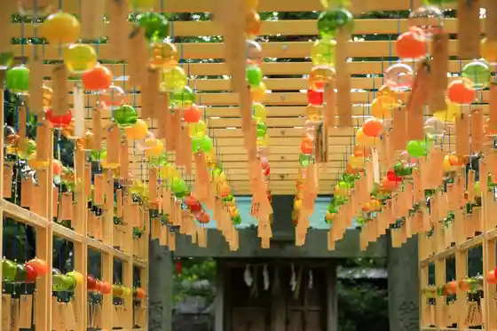
Arahito Shrine
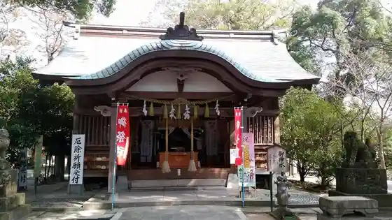
Gensen Notemburo Nakagawashi Kiyotaki
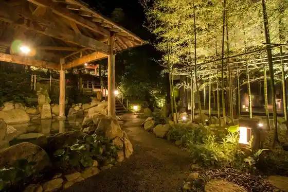
Arahito Shrine Koi Bombori Kairo
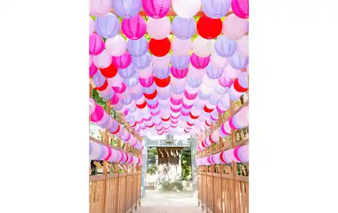
Gogayama Kurosu
Chikushi Yaba Kei no Autumn Leaves
Sakuta Mizo Park
Yume Hatake Nakagawashi Mise
Sakuta Mizo
Hakataminamieki Mae Biru Nakaichi
Sakuta Shrine
Pateisurii & Kafe Shie Sasahara
Kyusen Bu Yama
Toita Yama Shrine
Chikushigaoka Gorufu Club
Naka no Shima Park
Naka no Shima Koen Seisambutsu Chokubai Tokoro Kawasemi Village
Dining
串揚げ串和
Kushi Age Kushi Wa
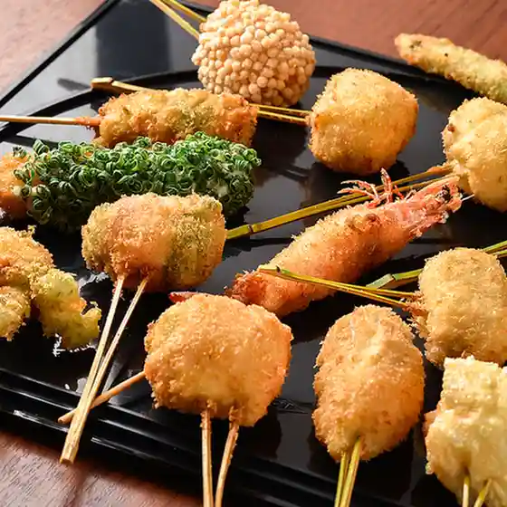
魚民 博多南駅前店
Uotami Hakataminamieki Mae Mise
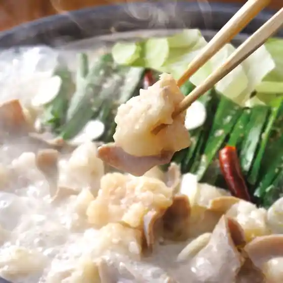
居酒屋 AJITO
Izakaya Ajito
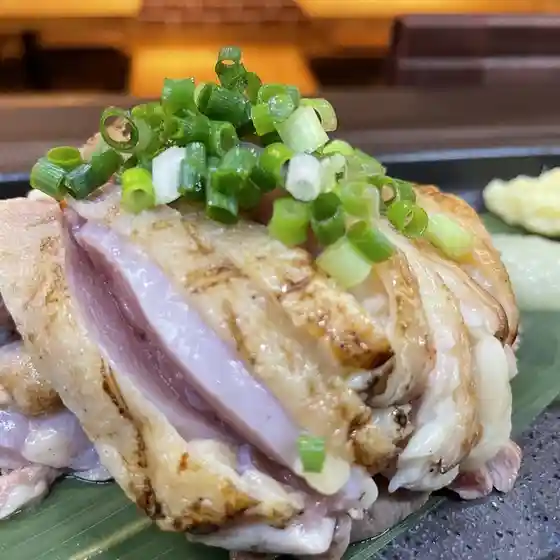
らーめん屋 鳳凛 那珂川店
Raamen Ya Ootori Rin Nakagawa Mise
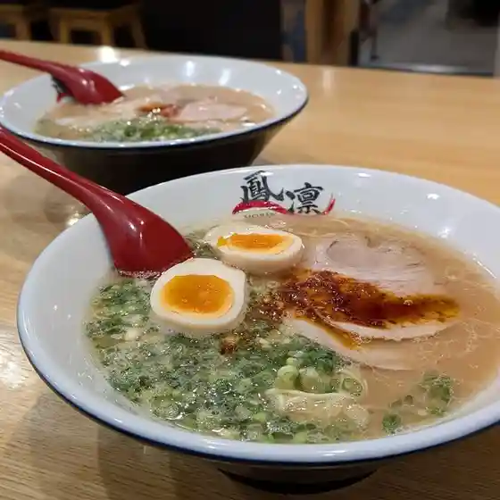
焼肉 いったん
Yakiniku Ittan
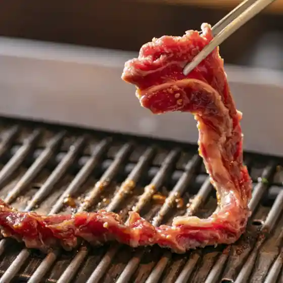
居酒家ダイニング HANA 那珂川
Kyo Shuka Dainingu Hana Nakagawa
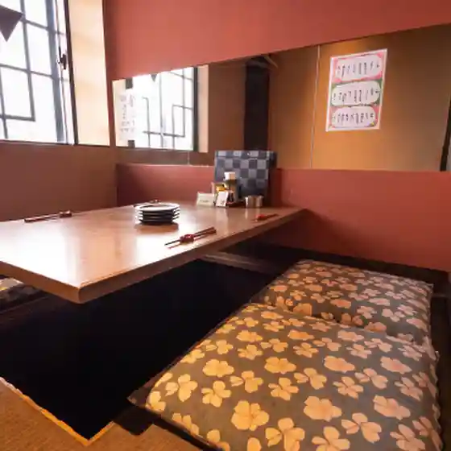
La cucina piemontese da Beppe
La Cucina Piemontese Da Beppe
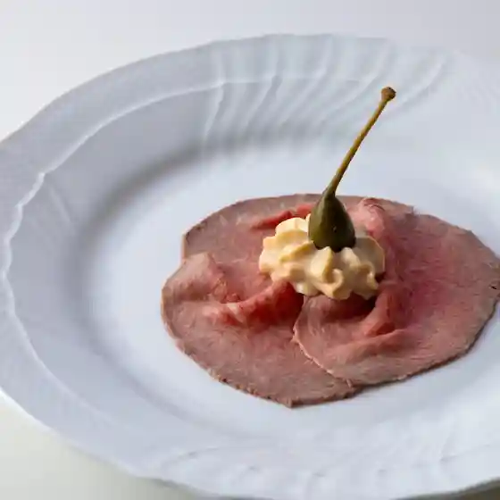
居酒屋悟空
Izakaya Gokuu
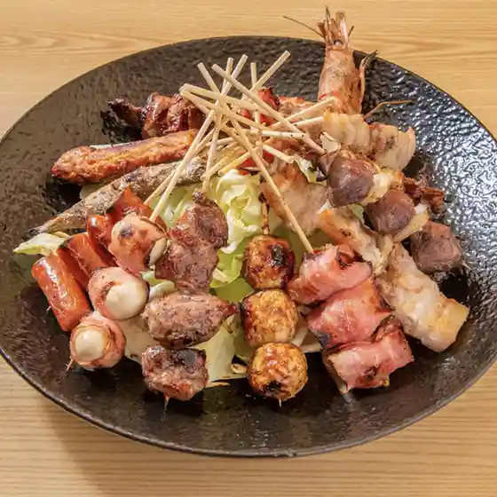
キステイ
Kisutei
クローバー
Kuroobaa
ごはんや美菜月
Gohanya Mina Gatsu
花と珈琲 ホキ
Hana To Koohii Hoki
ツツミ
Tsutsumi
かわせみの里
Kawasemino Sato
ジョイフル 那珂川片縄店
Joifuru Nakagawa Katanawa Mise
フランス菓子チクシヤ
Furansu Kashi Chikushiya
呑み処 さよか
Nomi Tokoro Sayoka
京都伊三郎製ぱん JB那珂川店
Kyouto Isaburou Sei Pan Jb Nakagawa Mise
ありす食堂
Arisu Shokudou
花かご
Hana Kago
パンプラス 福岡店
Panpurasu Fukuoka Mise
ミリカフェ
Mirikafe
来来亭 那珂川店
Rairai Tei Nakagawa Mise
日本料理 美はら
Nihonryouri Bi Hara
トレイル
Toreiru
ランチ&カフェ そら
Ranchi &Amp; Kafe Sora
五ヶ山アイスキャンデー
Go Ke Yama Aisukyandee
ヤマト
Yamato
ウエスト うどん屋那珂川南店
Uesuto Udon Ya Nakagawa Minami Mise
ディスカウントドラッグ コスモス 博多南駅店
Disukauntodoraggu Kosumosu Hakataminamieki Mise
パティスリー ノア
Pateisurii Noa
オリゴ
Origo
もりざね
Morizane
ナカムラボ
Nakamurabo
ほり野のカレーパン
Hori No No Kareepan
うなぎの大場
Unagino Ooba
銀の滴
Gin No Shizuku
nakanoshima coffee stand
Nakanoshima Coffee Stand
那珂川町役場売店
Nakagawa Machiyakuba Baiten
できたて!コロちゃんそうざい店
Dekitate ! Koro Chansouzai Mise
焼鳥 綱吉 那珂川店
Yakitori Tsunayoshi Nakagawa Mise
ひので屋 那珂川店
Hinode Ya Nakagawa Mise
カウボーイ
Kaubooi
カフェ ルルン
Kafe Rurun
ナカガワミートショップ はるか
Nakagawamiitoshoppu Haruka
うまてば
Umateba
太郎すし
Tarou Sushi
もつ鍋居酒屋 粉屋
Motsu Nabe Izakaya Konaya
肉のくまもと屋
Niku Nokumamoto Ya
大名寿し
Daimyou Hisashi Shi
居食処たらくや
Kyo Shoku Tokoro Tarakuya
チャイニーズキッチン 風梨
Chainiizukitchin Kaze Nashi
Palatino
Palatino
NANA CAFE
Nana Cafe
タリーズコーヒー ゆめモール那珂川店
Tariizukoohii Yume Mooru Nakagawa Mise
リンガーハット 福岡那珂川店
Ringaahatto Fukuoka Nakagawa Mise
居酒屋すずらん
Izakaya Suzuran
ほっともっと 那珂川町店
Hottomotto Nakagawa Machi Mise
ジョイフル 那珂川店
Joifuru Nakagawa Mise
ピーナッティ
Piinattei
Unagi no Oba Nakagawa Fukuoka Prefecture Kyushu
Unagi no Oba Nakagawa Fukuoka Prefecture Kyushu
Unagi no Oba Nakagawa Fukuoka Prefecture Kyushu
Unagi no Oba Nakagawa Fukuoka Prefecture Kyushu
Unagi no Oba Nakagawa Fukuoka Prefecture Kyushu
Unagi no Oba Nakagawa Fukuoka Prefecture Kyushu
Unagi no Oba Nakagawa Fukuoka Prefecture Kyushu
Unagi no Oba Nakagawa Fukuoka Prefecture Kyushu
Maison Lafite Nakagawa Fukuoka Prefecture Kyushu
Maison Lafite Nakagawa Fukuoka Prefecture Kyushu
Maison Lafite Nakagawa Fukuoka Prefecture Kyushu
Maison Lafite Nakagawa Fukuoka Prefecture Kyushu
Maison Lafite Nakagawa Fukuoka Prefecture Kyushu
Maison Lafite Nakagawa Fukuoka Prefecture Kyushu
Maison Lafite Nakagawa Fukuoka Prefecture Kyushu
Maison Lafite Nakagawa Fukuoka Prefecture Kyushu
Tempura Takeuchi Nakagawa Fukuoka Prefecture Kyushu
Tempura Takeuchi Nakagawa Fukuoka Prefecture Kyushu
Tempura Takeuchi Nakagawa Fukuoka Prefecture Kyushu
Tempura Takeuchi Nakagawa Fukuoka Prefecture Kyushu
Tempura Takeuchi Nakagawa Fukuoka Prefecture Kyushu
Tempura Takeuchi Nakagawa Fukuoka Prefecture Kyushu
Tempura Takeuchi Nakagawa Fukuoka Prefecture Kyushu
Tempura Takeuchi Nakagawa Fukuoka Prefecture Kyushu
Aozora Shokudo Nakagawa Honten Nakagawa Fukuoka Prefecture Kyushu
Aozora Shokudo Nakagawa Honten Nakagawa Fukuoka Prefecture Kyushu
Aozora Shokudo Nakagawa Honten Nakagawa Fukuoka Prefecture Kyushu
Aozora Shokudo Nakagawa Honten Nakagawa Fukuoka Prefecture Kyushu
Aozora Shokudo Nakagawa Honten Nakagawa Fukuoka Prefecture Kyushu
Aozora Shokudo Nakagawa Honten Nakagawa Fukuoka Prefecture Kyushu
Aozora Shokudo Nakagawa Honten Nakagawa Fukuoka Prefecture Kyushu
Aozora Shokudo Nakagawa Honten Nakagawa Fukuoka Prefecture Kyushu
Kona s Coffee Nakagawa Nakagawa Fukuoka Prefecture Kyushu
Kona s Coffee Nakagawa Nakagawa Fukuoka Prefecture Kyushu
Kona s Coffee Nakagawa Nakagawa Fukuoka Prefecture Kyushu
Kona s Coffee Nakagawa Nakagawa Fukuoka Prefecture Kyushu
Kona s Coffee Nakagawa Nakagawa Fukuoka Prefecture Kyushu
Kona s Coffee Nakagawa Nakagawa Fukuoka Prefecture Kyushu
Kona s Coffee Nakagawa Nakagawa Fukuoka Prefecture Kyushu
Kona s Coffee Nakagawa Nakagawa Fukuoka Prefecture Kyushu
Wara No Kura Joan Nakagawa Fukuoka Prefecture Kyushu
Wara No Kura Joan Nakagawa Fukuoka Prefecture Kyushu
Wara No Kura Joan Nakagawa Fukuoka Prefecture Kyushu
Wara No Kura Joan Nakagawa Fukuoka Prefecture Kyushu
Wara No Kura Joan Nakagawa Fukuoka Prefecture Kyushu
Wara No Kura Joan Nakagawa Fukuoka Prefecture Kyushu
Wara No Kura Joan Nakagawa Fukuoka Prefecture Kyushu
Wara No Kura Joan Nakagawa Fukuoka Prefecture Kyushu
Aji No Nakagawa Nakagawa Fukuoka Prefecture Kyushu
Aji No Nakagawa Nakagawa Fukuoka Prefecture Kyushu
Aji No Nakagawa Nakagawa Fukuoka Prefecture Kyushu
Aji No Nakagawa Nakagawa Fukuoka Prefecture Kyushu
Aji No Nakagawa Nakagawa Fukuoka Prefecture Kyushu
Aji No Nakagawa Nakagawa Fukuoka Prefecture Kyushu
Aji No Nakagawa Nakagawa Fukuoka Prefecture Kyushu
Aji No Nakagawa Nakagawa Fukuoka Prefecture Kyushu
Hakata Bikkuri Kaniya Nakagawa Fukuoka Prefecture Kyushu
Hakata Bikkuri Kaniya Nakagawa Fukuoka Prefecture Kyushu
Hakata Bikkuri Kaniya Nakagawa Fukuoka Prefecture Kyushu
Hakata Bikkuri Kaniya Nakagawa Fukuoka Prefecture Kyushu
Menya Horino Nakagawa Fukuoka Prefecture Kyushu
Menya Horino Nakagawa Fukuoka Prefecture Kyushu
Menya Horino Nakagawa Fukuoka Prefecture Kyushu
Menya Horino Nakagawa Fukuoka Prefecture Kyushu
Menya Horino Nakagawa Fukuoka Prefecture Kyushu
Menya Horino Nakagawa Fukuoka Prefecture Kyushu
Menya Horino Nakagawa Fukuoka Prefecture Kyushu
Menya Horino Nakagawa Fukuoka Prefecture Kyushu
Yamato Nakagawa Fukuoka Prefecture Kyushu
Yamato Nakagawa Fukuoka Prefecture Kyushu
Yamato Nakagawa Fukuoka Prefecture Kyushu
Yamato Nakagawa Fukuoka Prefecture Kyushu
Yamato Nakagawa Fukuoka Prefecture Kyushu
Yamato Nakagawa Fukuoka Prefecture Kyushu
Yamato Nakagawa Fukuoka Prefecture Kyushu
Yamato Nakagawa Fukuoka Prefecture Kyushu
Tonkatsu Hamakatsu Fukuoka Nakagawa Nakagawa Fukuoka Prefecture Kyushu
Tonkatsu Hamakatsu Fukuoka Nakagawa Nakagawa Fukuoka Prefecture Kyushu
Tonkatsu Hamakatsu Fukuoka Nakagawa Nakagawa Fukuoka Prefecture Kyushu
Tonkatsu Hamakatsu Fukuoka Nakagawa Nakagawa Fukuoka Prefecture Kyushu
Stay
映えるライトアップ、本格シェフのいる グランピング五感
Hae Ru Raitoappu , Honkaku Shiefu Noiru Guranpingu Gokan
ZINEN
Zinen